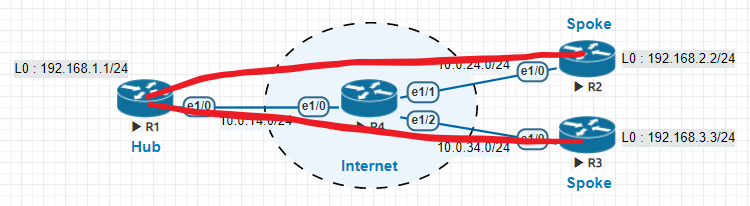
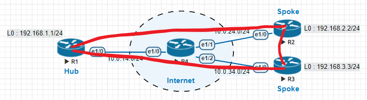

GRE tunnel
(Generic Routing Encapsulation)
int tunnel 0
ip add 10.0.12.1 255.255.255.252
tunnel source s0/0/0
tunnel destination 62.45.25.2
tunnel mode gre ip
所有 Spokes 只與 Hub 建立 GRE tunnel，然後在 Hub 上做 routing.
All Spokes reach each others through Hub.
所有 Spokes 之間都建立 GRE tunnel，因此沒有需要做 Routing.
All Spokes reach each others directly.